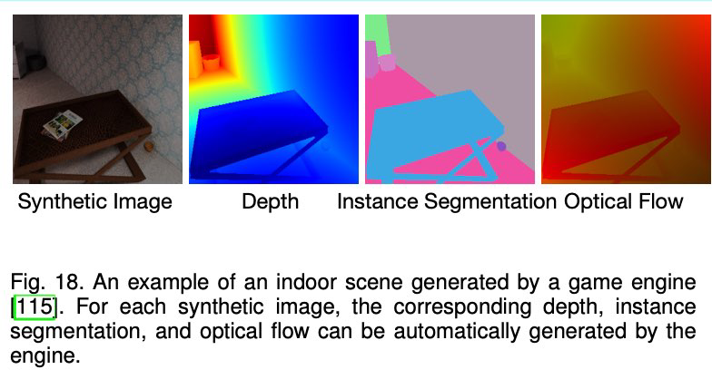

Learning with Labels Generated by Game Engines¶
- Given models of various objects and layouts of environments, game engines are able to render realistic images and provide accurate pixel-level labels
- Since game engines can generate large-scale datasets with negligible cost, var- ious game engines such as Airsim [142] and Carla [143] have been used to generate large-scale synthetic datasets with high-level semantic labels including depth, # contours, surface normal, segmentation mask, and optical flow for training deep networks.

- However, due to the domain gap between synthetic and real-world images, the ConvNet purely trained on synthetic images cannot be
- directly applied to real-world images
- the ConvNet trained with the semantic labels of the synthetic dataset can be effectively applied to real-world images.
- Ren and Lee proposed an unsupervised feature space domain adaptation method based on adversarial learning [30]
- the network predicts surface normal, depth, and instance contour for the synthetic images and a discriminator network D is employed to minimize the difference of feature space domains between real-world and synthetic data
- the network is able to capture visual features for real-world images
- Jing et al. proposed to learn features by training a ConvNet to predict relative scene depths while the labels are generated from optical flow [92].
- No matter what kind of labels used to train ConvNets, the general idea of this type of methods is to distill knowledge from hard-code detector
- The hard-code detector can be edge detector, salience detector, relative detector, etc
- no human-annotations are involved
- one drawback is that the semantic labels generated by hard-code detector usually are very noisy which need to specifically cope with.